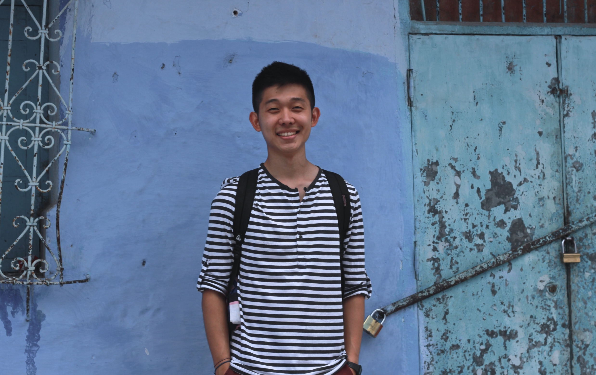

I am currently a third-year, undergraduate student at Duke University studying computer science and creative writing. Explore this site to discover my CS projects, assorted writing pieces, and my photos. Send me a message if you are interested in hiring me or if you just want to chat. If you wish to know more about who I am, then just click
here.
about me

Born in South Korea but raised in Southern California, I am now a student in Durham, North Carolina.
I discovered my love for computer science in my Data Structures and Algorithms course during the fall of my freshman year. Though I did have prior exposure to code, the class and its hands-on projects demonstrated the immense impact technology can have on the world. I am inspired by computer science's endless applications and its ability to shape our everyday life for the better. Since my first semester, besides my regular coursework, I have also worked on personal projects and participated in hackathons.
As a writer, I have an extensive background in journalism. My experiences include serving as an editor in both my high school newspaper and yearbook and writing for Duke's The Chronicle as a biweekly columnist. Moreover, I maintained a weekly blog during my study abroad in Morocco. I was fortunate to have one of my posts republished by both ISLAMiCommentary and Duke Global.
When I am not coding or writing, I am usually jamming out with the Duke band at our football and basketball games. Other interests include photography, playing guitar, hikes, stand-up comedy, and short stories. Lately, I have been reading a lot of David Sedaris.